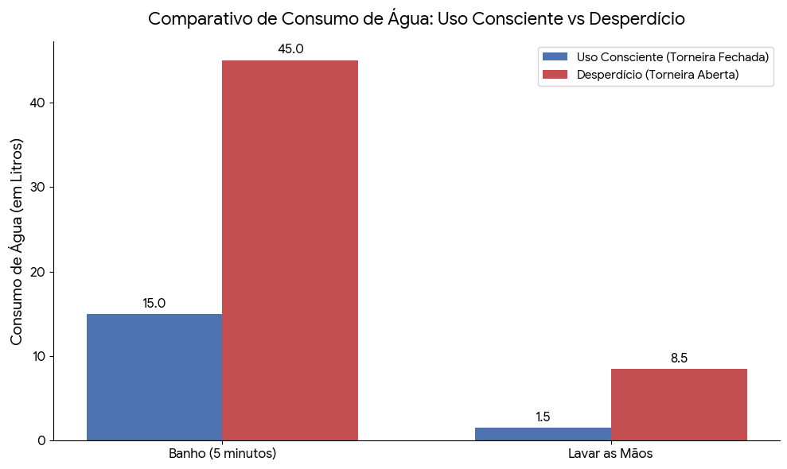

VÍDEO INFANTIL - SOBRE O CICLO DA ÁGUA
Vídeos infantil para ensinar sobre a Água

Somar Meus Gastos de Água
Digite a quantidade para somar o valor gasto no dia (Lembrando, é o valor estimado e pode estar incorreto):
Acima de 120 litros por dia por pessoa já é considerado desperdício.
Valor Total Gasto: 0 Litros!
Desafio da ODS 6
Qual atitude economiza água de verdade?
Qual é a principal meta da ODS 6 para o ano de 2030?
Qual problema de saúde pública está diretamente relacionado à falta de saneamento básico do ODS 6?
O que o ODS 6 busca garantir para todas as pessoas?
Por que o saneamento básico e a água limpa são tão importantes para a saúde?
Onde é o lugar certo para jogar o lixo para evitar que ele polua os rios e mares?